AI
Artificial Neural Network

What are neural networks?
Concept
works like a simplified brain
Math
Artificial Neuron
Matrix multiplication
Activation Function

Backpropagation
Learning Rate
Problem
Code
Install
$ pip install numpy
$ pip install scipyClass
import numpy
import scipy.special
class neuralNetwork:
def __init__(self, inputnodes, hiddennodes, outputnodes, learningrate):
self.inodes = inputnodes
self.hnodes = hiddennodes
self.onodes = outputnodes
# link weight matrices, wih and who
# weights inside the arrays are w_i_j, where link is from node i to node j in the next layer
self.wih = numpy.random.normal(0.0, pow(self.inodes, -0.5), (self.hnodes, self.inodes))
self.who = numpy.random.normal(0.0, pow(self.hnodes, -0.5), (self.onodes, self.hnodes))
self.lr = learningrate
# activation function is the sigmoid function
self.activation_function = lambda x: scipy.special.expit(x)
def query(self, inputs_list):
# convert inputs list to 2d array
inputs = numpy.array(inputs_list, ndmin=2).T
# calculate signals into hidden layer
hidden_inputs = numpy.dot(self.wih, inputs)
# calculate the signals emerging from hidden layer
hidden_outputs = self.activation_function(hidden_inputs)
# calculate signals into final output layer
final_inputs = numpy.dot(self.who, hidden_outputs)
# calculate the signals emerging from final output layer
final_outputs = self.activation_function(final_inputs)
return final_outputs
def train(self, inputs_list, targets_list):
targets = numpy.array(targets_list, ndmin=2).T
inputs = numpy.array(inputs_list, ndmin=2).T
hidden_inputs = numpy.dot(self.wih, inputs)
hidden_outputs = self.activation_function(hidden_inputs)
final_inputs = numpy.dot(self.who, hidden_outputs)
final_outputs = self.activation_function(final_inputs)
# output layer error is the (target - actual)
output_errors = targets - final_outputs
# hidden layer error is the output_errors, split by weights, recombined at hidden nodes
hidden_errors = numpy.dot(self.who.T, output_errors)
# update the weights for the links between the hidden and output layers
self.who += self.lr * numpy.dot((output_errors * final_outputs * (1.0 - final_outputs)), numpy.transpose(hidden_outputs))
# update the weights for the links between the input and hidden layers
self.wih += self.lr * numpy.dot((hidden_errors * hidden_outputs * (1.0 - hidden_outputs)), numpy.transpose(inputs))Instance
# number of input, hidden and output nodes
input_nodes = 3
hidden_nodes = 3
output_nodes = 3
# learning rate is 0.3
learning_rate = 0.3
# create instance of neural network
n = neuralNetwork(input_nodes,hidden_nodes,output_nodes, learning_rate)Query
print(n.query([1.0, 0.5, -1.5]))$ array([[ 0.43461026],
[ 0.40331273],
[ 0.56675401]])Learning curve
Advantages
- solving uncodable problems
- compensate for deficits in competence through computer performance
Disadvantages
- Blackbox
- training data
- Quantity/Quality
- Bias
- Side effects
- old brain Models